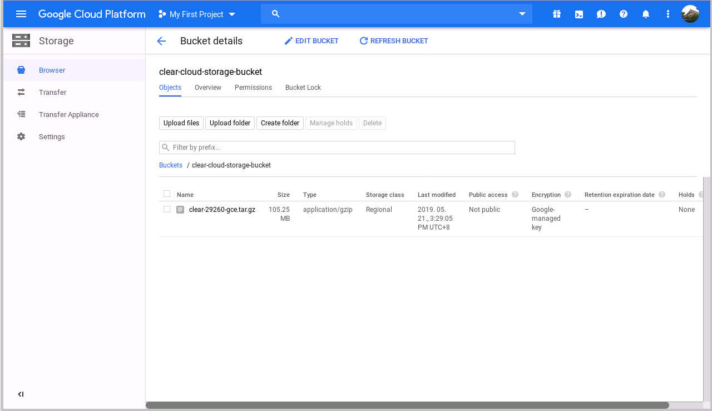
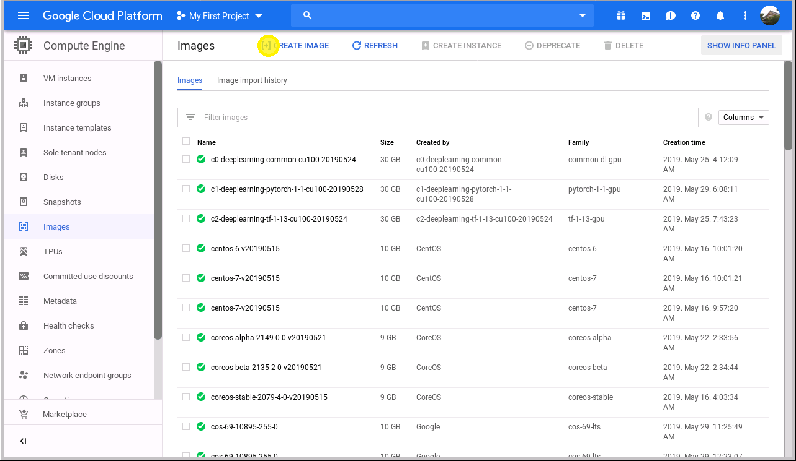
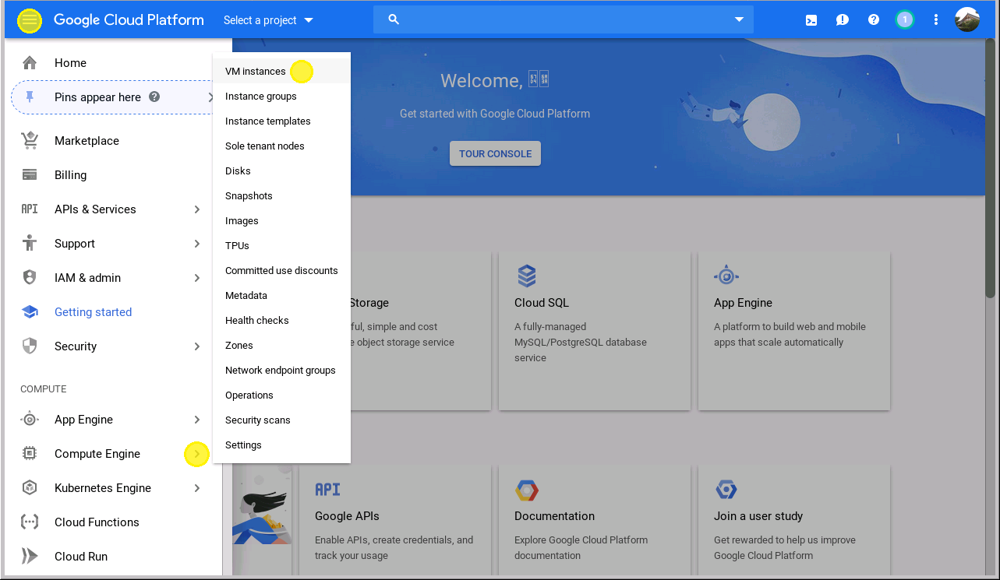
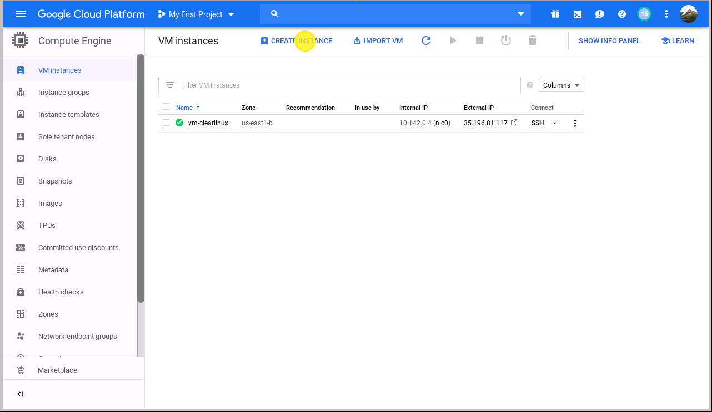
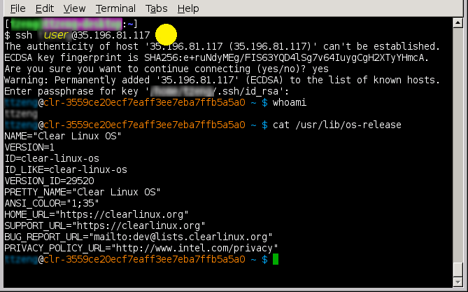

Launch Clear Linux* OS Compute Engine on Google Cloud Platform*
This page explains the steps to create a virtual machine instance of Clear Linux* OS on Google Cloud Platform (GCP).
Prerequisites
- Set up a Google account and a GCP billing account.
- Generate and install a user SSH key in the Linux PCs that will connect to the VMs in GCP.
Setup Clear Linux OS VM on GCP
Sign in to your Google* account on the Google Cloud Console:
Google Cloud Platform uses Projects to manage resources. Select or create a new project for hosting the Clear Linux OS VM.
注解
Refer to the Quickstart Using a Linux VM guide to learn about the process of creating VM instances on GCP.
Navigate to the latest Clear Linux OS release folder to view the currently released GCE image, and download the
clear-<release number>-gce.tar.gzimage archive.You don’t need to uncompress the image archive, the intact file will be uploaded to the Google Cloud Storage later.
Create a Storage Bucket for hosting the Clear Linux OS image source archive downloaded in the previous step:
- Click the Navigation menu icon on the upper left screen menu.
- Select the item from the side bar on the left. You will be sent to the Storage Browser tool or the Cloud Storage overview page.
注解
You may need to create a billing account and link to this project before you create a bucket.

Figure 3: Cloud Storage Browser tool
Click the CREATE BUCKET button to enter the bucket creation tool. The bucket name must be unique because buckets in the Cloud Storage share a single global namespace.
Leave the remaining options set to the defaults, and click the Create button at the bottom to create a Bucket.
Once the bucket is created, click the Upload files button on the Bucket details page to upload the Clear Linux OS GCE image archive to the named bucket:

Figure 5: Cloud Storage bucket

Figure 6: Uploading the image source archive file
Figure 7: Importing complete
Browse the Compute Engine Image library page:
Click the Navigation menu icon on the upper left screen menu.
Select the from the side bar on the left.

Figure 8: Image library
On the Compute Engine Image library page, click the [+] CREATE IMAGE menu item to create a custom image:
Figure 9: Create image
In the VM image creation page, change the image source type to Cloud Storage file.
Under Source, select Browse.
Locate the
clear-<release number>-gce.tar.gzfile, and click Select.
Figure 10: Create image using imported object
Accept all default options, and click the Create button at the bottom to import the Clear Linux GCE image to the image library.

Figure 11: Image is created
After the Clear Linux OS image is imported, you can launch a VM instance running Clear Linux OS:
- Click the Navigation menu icon on the upper left screen menu.
- Select from the side bar on the left.
Figure 12: VM instances catalog
If no VM instance was created in this project, you will be prompted to create one.
Alternatively, click the CREATE INSTANCE button on the VM instances page to create a VM instance.

Figure 13: VM creation
Figure 14: VM instances list
Under Region, choose a region based on the Best practices for Compute Engine regions selection.
Under Boot disk, click the Change button.
Select the tab for using Clear Linux OS GCE image.

Figure 16: Select Clear Linux boot disk to create a VM instance
Scroll down to the bottom of the VM instance creation page, expand the Management, security, disks, networking, sole tenancy group.

Figure 17: Set up SSH keys
注解
Clear Linux OS does not allow SSH login with a root account by default. As a result, you must configure the VM instance with your SSH public key, so that you are able to access it remotely.
Refer to OS Security for more details.
Click the tab, copy and paste your SSH public key:

Figure 18: Set SSH key for remote login
警告
The username is assigned from characters preceding
@in the email address, included in the SSH key. The dot symbol “.” is not allowed, because it is an invalid character while creating user accounts in Clear Linux OS.Click the Create button to create the Clear Linux OS VM.
The Clear Linux VM instance is created and assigned a public IP address:
You can now SSH login to the VM using the IP address obtained in the previous step, and the username associated with the SSH public key:
Figure 20: SSH login to Clear Linux VM
{kind=link}
{kind=link}
{kind=link}
{kind=link}
{kind=link}
{kind=link}
{kind=link}
{kind=link}
{kind=link}
{kind=link}